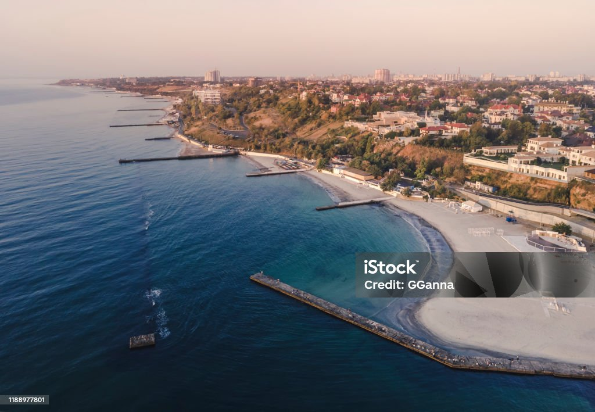

Одеса — це не просто точка на мапі, це місто-емоція. Тут історія застигла в камені, а кожен фасад розповідає свою легенду. Від величного ампіру до затишних одеських двориків — архітектура міста створює неповторний ансамбль, який зачаровує мандрівників вже понад два століття.
